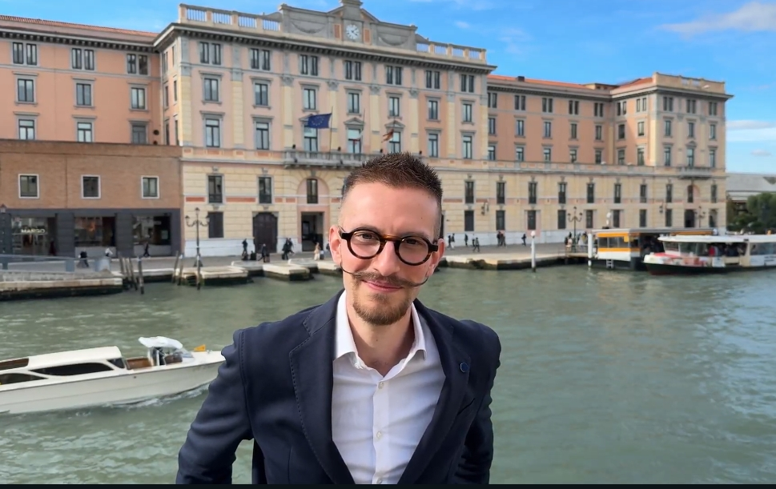
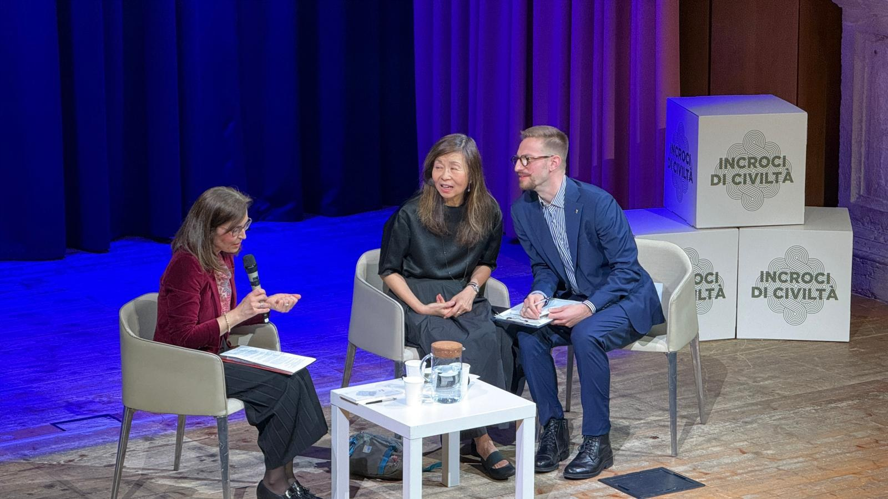
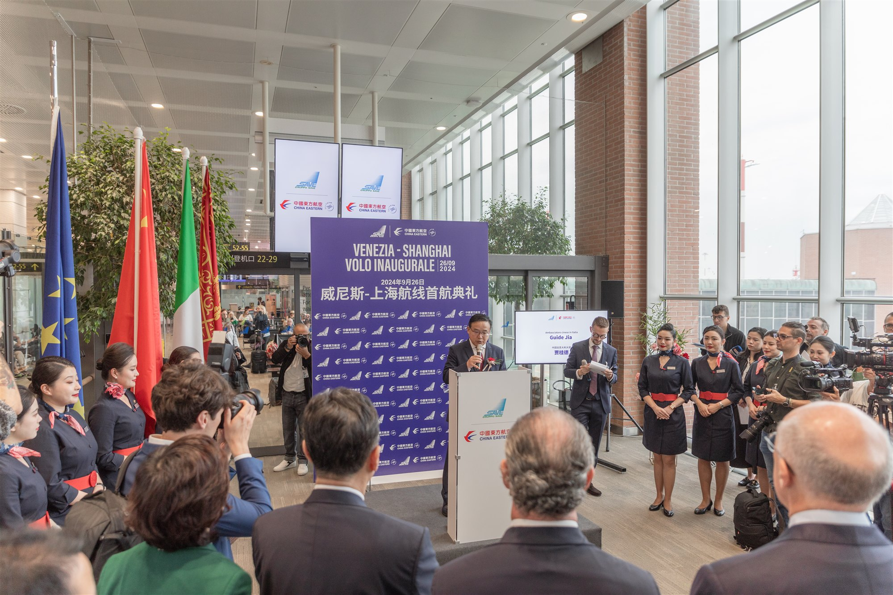
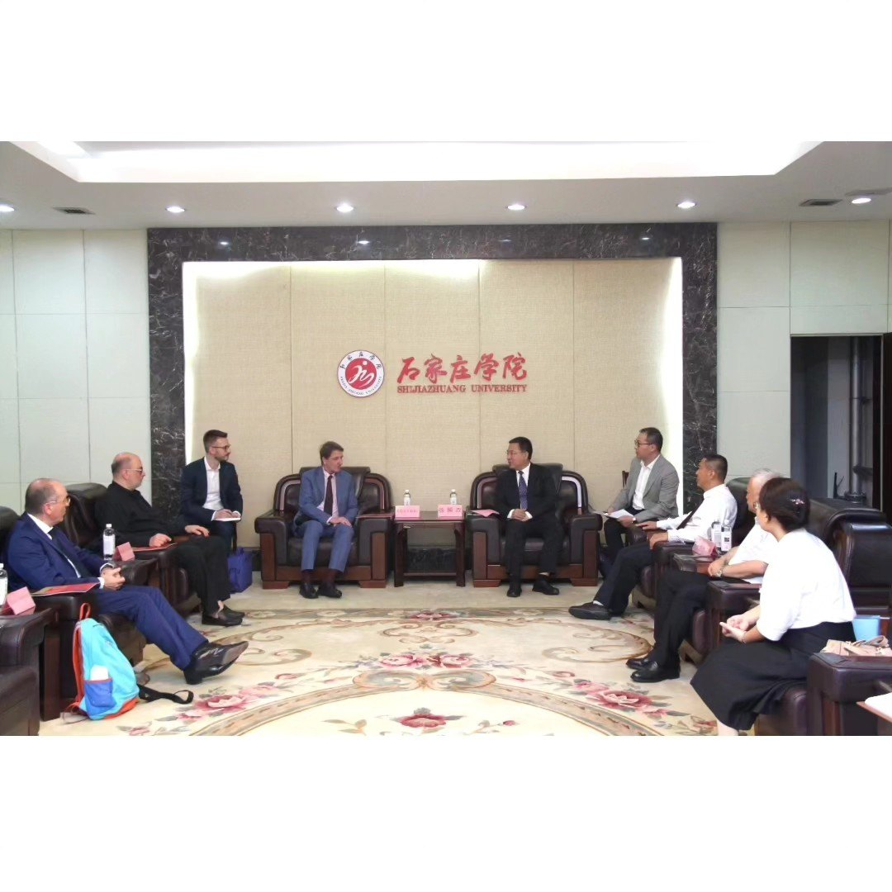
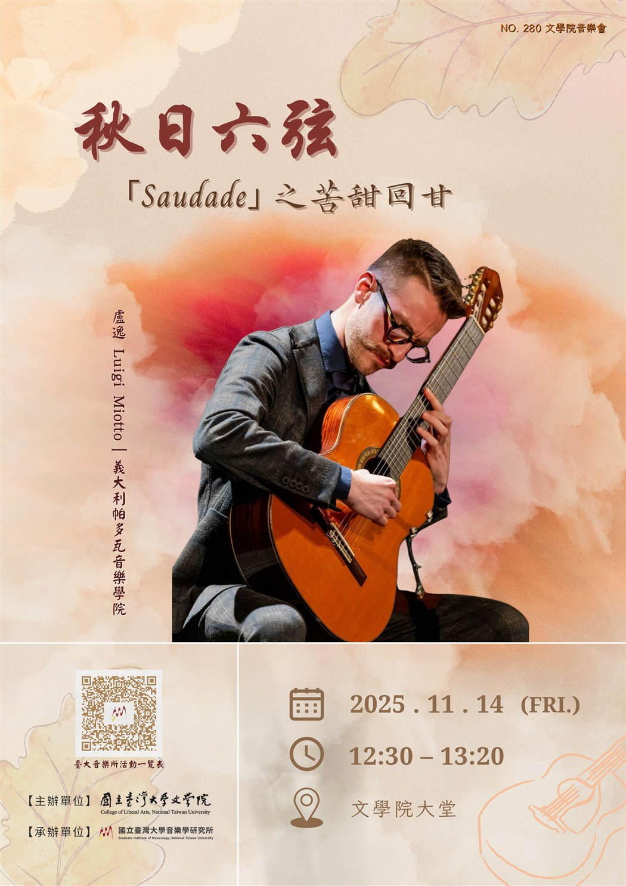

Heidelberg University
Joint PhD program in Asian and Transcultural Studies at the Centre for Asian and Transcultural Studies (CATS). Supervisor: Prof. Dr. Barbara Mittler.
PhD candidate, freelance interpreter, translator, and classical guitarist.
Lost in translation (and sometimes on the way)
借翻譯與音樂逃「逸」日常，地圖上偶爾迷「盧」。

Luigi Miotto is a PhD candidate in Asian and Transcultural Studies in a joint PhD program between Ca’ Foscari University of Venice and Heidelberg University, supervised by Prof. Dr. Paolo Magagnin and Prof. Dr. Barbara Mittler. He holds two master’s degrees from Ca’ Foscari: one in Chinese–English Translation and Interpreting, and one in Languages, Economics and Institutions of Arab Countries. A classically trained musician, he completed a BA and an MA in Classical Guitar at Padua’s “Cesare Pollini” Conservatory of Music, including an exchange period at the Escola Superior de Música e Artes do Espectáculo in Porto.
His PhD research focuses on transcultural resonances in the Chinese translation of music theory terminology since the late seventeenth century. He also researches Sino-Arab relations and contemporary Chinese-to-Arabic institutional translation. In fall 2025, he was a visiting researcher at the Graduate Institute of Musicology, National Taiwan University (Taipei).
Joint PhD Program in Asian and Transcultural Studies, Ca’ Foscari University of Venice and Heidelberg University (2024–present). Supervised by Prof. Dr. Paolo Magagnin and Prof. Dr. Barbara Mittler.
How was music theory terminology translated and (re)interpreted in Chinese from the late seventeenth to the early twentieth century? Across these transcultural encounters, how did translators, texts, and cultural networks negotiate musical concepts and the production of knowledge?
How does translation shape China’s international discourse and strategic narratives for Arabic-speaking audiences?
Joint PhD program in Asian and Transcultural Studies at the Centre for Asian and Transcultural Studies (CATS). Supervisor: Prof. Dr. Barbara Mittler.
Visiting researcher at the Graduate Institute of Musicology, National Taiwan University, and the Department of Chinese Music, National Taiwan University of Arts. Supervisor: Prof. Dr. Shen Tung 沈冬.
2024 Visiting Program for Young Sinologists, funded by the Ministry of Culture and Tourism of the People’s Republic of China.
Gallelli, Beatrice, Luigi Miotto, and Tanina Zappone. 2025. “Strategic Narratives across the Strait: A Comparative Analysis of the English, Italian, and Arabic Versions of The Governance of China (I).” Lingue Culture Mediazioni / Languages Cultures Mediation 12 (2): 35–63. doi:10.7358/lcm-2025-002-gall.
Miotto, Luigi. Review of Wen-chin Ouyang, Ethical Living through Stories: Encounters with Adab (London: I.B. Tauris, 2025). Maydan: Rivista sui mondi arabi, semitici e islamici 6.
Duino, Giovanna; Nastassia Habrielchyk; Luigi Miotto. “Storie d’infanzia.” In Federica Passi, ed., Ping Lu. Anima di pioggia leggera. Venice: Cafoscarina, 2025, 84–109. Translation from Chinese into Italian.
Chinese<>Italian and Italian<>English consecutive, simultaneous and whispered interpreting (chuchotage) for institutional meetings, public events, conferences and festivals.
Selected settings: Venice Airport, Pitti Immagine and Incroci di Civiltà.
Part-time language tutor at Padua’s “Cesare Pollini” Conservatory of Music (March 2022–October 2023), supporting Chinese students in their communications with faculty and administrative staff and helping them navigate administrative procedures. Also assisted the International Relations Office in its work with Chinese institutions and translated website content into Chinese. An earlier internship (October–December 2021) involved website translation and assistance to students.



Final grade: 110/110, with honors. Thesis: “Six Strings on the Silk Road. Stephen Goss’s The Chinese Garden.” Discussed 3 July 2023.
Final grade: 110/110, with honors. Thesis: “Trois Saudades: ‘fazer das tripas coração’. Roland Dyens’s Synthesis of Saudade, Folklore and Innovative Elements.” Discussed 28 October 2020.
Licenciatura em Música, Variante de Instrumento (Guitarra); guitar studies with Artur Caldeira.

Theory of Music Harmony and Analysis (乐理视唱专业课), taught in Chinese and Italian in both semesters of the 2023–24 academic year.
Theory of Music Harmony and Analysis 1 (和声与分析理论1) for first-year BA students in the Music Studies program (音乐学本科教育项目), during the second semester of 2022–23. Taught in Chinese and Italian as part of a partnership between Shijiazhuang University and “Cesare Pollini” Conservatory of Music in Padua.
Browse the full CV by section, or search by name, institution, course, event or date.
International joint PhD program. 2026-2027 academic year: enrolled in the third year of the PhD (Ca’ Foscari University of Venice: 40th cycle). Research topics: Chinese music terminology and translation history. Project title: “TransMuTe: Transcultural Resonances in the Chinese Translation of Music Theory Terminology Since the Late 17th Century.” Supervisors: Paolo Magagnin (Ca’ Foscari) and Barbara Mittler (Heidelberg).
Final grade: 100/100.